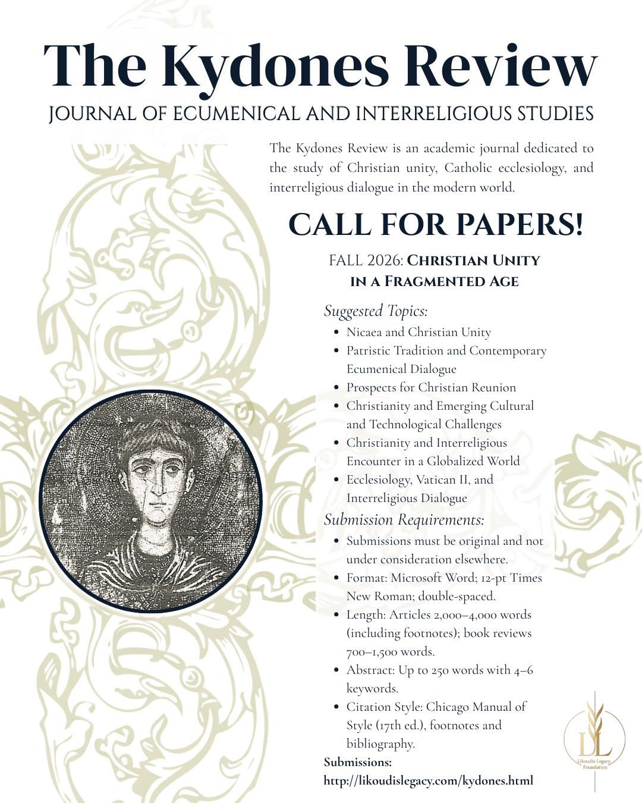
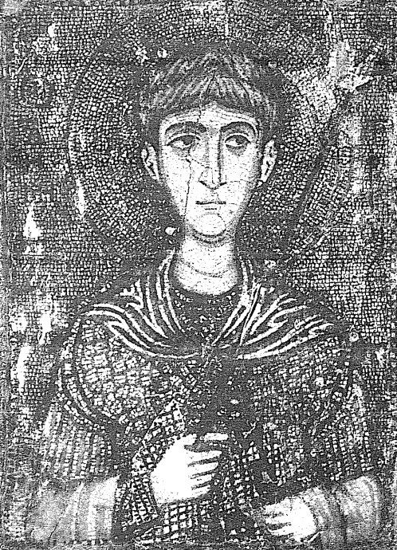

A premier journal of Christian theology and ecumenism
The Kydones Review is an academic journal dedicated to the study of Christian unity, Catholic ecclesiology, and interreligious dialogue in the modern world.
The journal takes its name from Demetrios Kydones, the Byzantine scholar who translated the works of Thomas Aquinas into Greek and became one of the most important intellectual bridges between the Greek East and the Latin West. James Likoudis regarded Kydones as something of a personal hero — a figure who refused to treat the divisions between Christians as inevitable, and instead devoted his scholarship to building understanding across them. Naming the journal after him reflects the same aspiration.
We invite submissions from scholars, graduate students, and serious independent researchers. Our first issue (Fall 2026) focuses on the theme: Christian Unity in a Fragmented Age.
Submit to: alikoudis@likoudislegacy.com
Andrew Likoudis, MA
Editor-in-Chief
Dr. Vladan Stanković
Editorial Board Member
Dr. Fabio Salgado
Editorial Board Member
Dr. Luke DeWeese
Editorial Board Member

Fall 2026 · Call for Papers

c. 1324 – c. 1398
Byzantine theologian, statesman, and translator who introduced Thomas Aquinas to the Greek-speaking world and labored his entire life for the reunion of the Eastern and Western Churches. See Scholars of the Sacred →
Rigorous, scholarly articles delving into various theological themes, reviewed by esteemed experts in the field.
Contributions from various denominations, promoting a richer understanding of Christian unity and diversity.
Explorations of significant theological figures and movements, connecting past wisdom with modern inquiry.
Thoughtful analyses of recent publications in theology and religious studies.
Encouraging and publishing works from promising new voices in theological scholarship.
Publishing translations of lesser-known Eastern and Western patristic and medieval theological texts relevant to ecumenical inquiry.
We welcome submissions that reflect original research, critical thinking, and a commitment to ecumenical dialogue. The Kydones Review seeks to publish high-quality, original research that contributes to the understanding of Christian theology, with a special focus on ecumenism.
Submit a ManuscriptSubmissions must be original work and not under consideration by any other publication.
Manuscripts should be submitted in Microsoft Word format, using 12-point Times New Roman, double-spaced.
Articles: 5,000–8,000 words including footnotes. Book reviews: 1,000–1,500 words.
Include an abstract of no more than 250 words and 4–6 keywords.
Use the Chicago Manual of Style (17th edition) for footnotes and bibliography.
We welcome original scholarship in Catholic theology, philosophy, ecumenism, and church history. Submissions should be unpublished and not under consideration elsewhere. Please include an abstract of 150–250 words and attach your manuscript as a PDF or Word document.